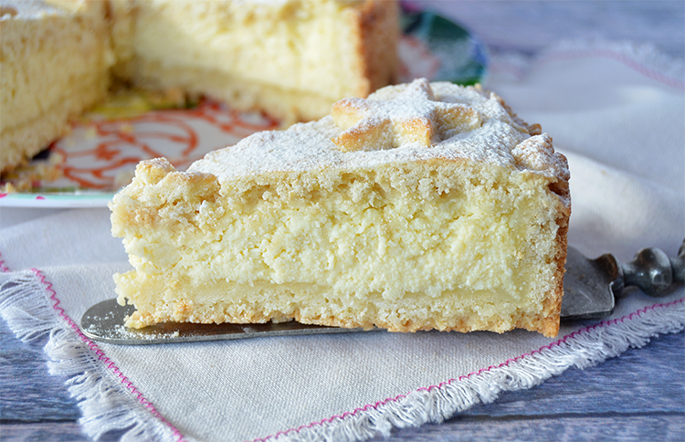

TARTA DE RICOTA
Ingredientes

Masa:
| Cant | Productos |
|---|---|
| 180 gr | Manteca |
| 150 gr | Azucar |
| 1 cda | Ralladura de limon |
| - | Esencia de vainilla |
| 1 | Huevo |
| 360 grs | Harina 0000 |
| 1 cda | Polvo de hornear |
Relleno:
| Cant | Productos |
|---|---|
| 600 grs | Ricota |
| 2 | Huevo |
| 1 cda | Almidon de maíz |
| 200 grs | Azucar |
Decorar:
- Azúcar impalpable
Preparación
Para la masa, cremar la manteca con el azúcar más la ralladura, el huevo y la esencia.
Hacer una corona con la harina mezclada con el polvo de hornear y volcar el cremado en el centro. Acariciar con ambas manos integrando pero sin amasar para hacer un arenado.
Dividir en 2 partes (1/3 y 2/3).
Tomar los 2/3 y un molde desmontable de 24 cm y forrar base y bordes presionando con los dedos.
Para el relleno, en un bol, mezclar los ingredientes y rellenar.
Cubrir con el tercio restante y cocer al horno medio por 40 minutos.
Decorar con azúcar impalpable.